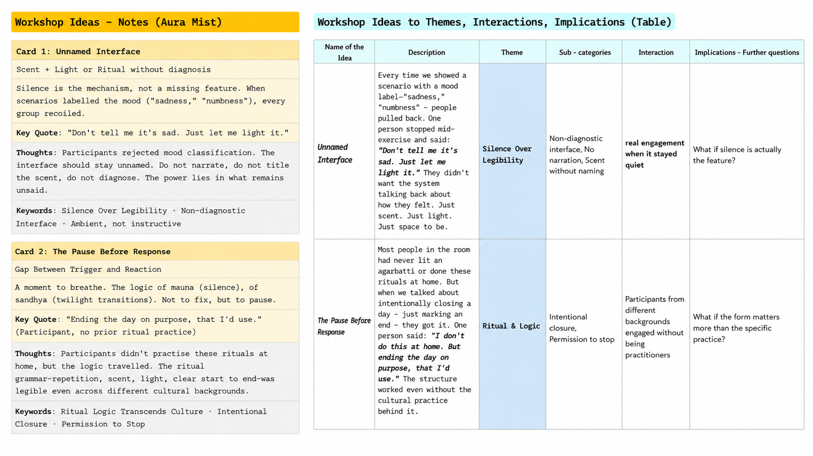

MOOD REGULATIONSCENTRITUALCARENORTH-INDIAN DOMESTIC PRACTICE
Can a room help you regulate a mood by changing the air around it, not charting it?
That was the question. I did not build and test a device. But nine people in a workshop showed me something I did not expect: when an interface names your mood, it stops helping.
A hypothesis, not a proof, and the part I would defend.
The problem
Mood apps show you data. They name a feeling, draw a graph, then leave you the hard part: what now?
People rarely struggle to notice a bad mood. They struggle with the next move.
That move is usually physical. A walk. An open window. An agarbatti lit on the floor.
I went after that gap. Not detection, the step after it.
The bet
Not a tracker. An atmosphere.
Why scent? It reaches memory and feeling before it reaches words, slow, ambient, hard to argue with.
The survey backed the direction: coping was sensory and solitary, and people wanted support without having to explain themselves.
So, a non-verbal nudge. Ritual seemed the right grammar: repetition, scent, light, a clear start and end. We found traditions and rituals to be part of easing daily commotionin our secondary literature.
The rituals are mine. I grew up with these North-Indian, largely Hindu domestic practices. The cultural authority here is my own, not a community's. That is the grounding, and the limit.
What I did
01
Survey
A self-reported directional survey with 150 responses. It used week-long recall and no validated scale. It mapped the spread and pointed me toward scent.
02
Ethnography
I watched how students actually regulate mood and saw scent rituals already in use. They either try and eat something or go for a Nature walk. Inbedding hidden in these rituals which surfaced by them were smell and sound. These observations, with my own background, became the Ritual cards.
03
Speculative workshop
A futuring card deck: Future, Emotion, Trigger, Ritual, Modality, adapted from Ceylan Beşevli's acoustophoresis work.
04
Analysis
With consent, and prior information given to the participants, I recorded and transcribed each session, then ran reflexive thematic analysis.
The workshop included 09 students, 04 girls, 05 boys; 06 B.Tech, 02 M.Tech, 01 PhD, from mixed ethnic and religious backgrounds, in three groups.
I designed this, and I already believed ritual was the answer. I read those transcripts with that bias, and tried to flag where it shaped what I saw.
WORKSHOP / FUTURING CARDS
One card draw
FUTURE
In a
HOSTEL
future
A future of solitude, and quiet end to the day.
EMOTION
A state of
NUMBNESS
The user does not want diagnosis, only a gentle way to pause.
TRIGGER
Shaped by
SELF-DOUBT
Academic pressure, and the feeling of not being enough.
RITUAL
Marked by
DIYA (Lamp)
A domestic ritual object used to mark closure, stillness, and intention.
MODALITY
Through
LIGHT + SCENT
Warm light and soft olfactory cues create an ambient response.
Futuring card method adapted from Ceylan Beşevli et al.’s SONARIOS paper, using card combinations to generate speculative interaction scenarios.
The idea: a lamp you light at the end of a bad day. It never asks how you feel. Lighting it is the message, the day is over. Warm light rises, a faint sandalwood follows, then it dims itself.
Not to cheer you up. To give permission to stop.
That one draw seeded both scenarios, and the hypothesis below.
What the workshop showed
Two themes carried the most weight.
THEME 01
The Pause Before Response
A gap between trigger and reaction. The logic of mauna, of sandhya (mediatation).
THEME 02
Closing, Not Fixing
Marking an end, not inducing a feeling. The logic of the diya, of raga samay (Hymns), ragas bound to the hours.
What struck me: the rituals were mine, but their logic travelled. Most of the room did not practise them. They engaged anyway.
"I don't do this at home. But ending the day on purpose, that I can use use."
And the thing I did not expect: every group recoiled when a scenario labelled the mood. One person, mid-exercise, said:
"Don't tell me it's sad. Just let me light it."
So the hypothesis: the interface should stay unnamed. Do not classify the mood. Do not title the scent. Do not narrate. In scent, silence may be the mechanism, not a missing feature.
A risk it raises: smell is personal. A "calming" sandalwood is, for someone, the smell of a funeral. So the user picks the scent. The system never assigns it.

Workshop notes translated into themes, interaction logic, and design implications.
Two scenarios
SCENARIO 01
The Pause
Back from a hard call. One tap, wet mitti scent, warm light, mist in short pulses. Nothing labelled, nothing notified. Ten minutes before you face anyone.
Buildable now. The catch is latency, smell lingers, so timing a pause is harder than timing a light.
SCENARIO 02
The Evening Raga
Fourth night of exam week. The app reads rhythm of your responses, never mood: focus mode, every night, past midnight. At dusk it offers to close the day. Light dims, mist slows, scent shifts citrus to sandalwood. One question: continue, or pause?
Buildable now on the digital side. The hard part is the mapping, which scent, which hour and also to collect the rhythm.
The system never infers your emotion. You choose; it nudges from time and use.
SCENARIOS / ATMOSPHERE / SILENCE
The honest question
The research itself is the warning. People numb with tobacco and alcohol. They snap at the people they love. Same move, changing your state to dodge a feeling, gone wrong.
So does an atmosphere device help you transition, or just help you avoid? I do not know. That is the deeper question, and it needs a longer study than I have run.
"Close the day, don't escape it" is an intention, not a result.
What I learned
Unnamed may beat legible.
The least obvious thing here, and the first I would test.
The rituals are borrowed from my background, not the participants'.
The workshop did not endorse the use of tradition, but tested whether their logic travels.
The samples are formative.
150 self-reports and nine students give direction, not proof. It was purposive sampling at IIT Roorkee, India.
Scent is the bet and the bottleneck.
Latency, lingering, personal meaning and shared air all remain hard problems.
Where it points
A step, not a result.
The next study is small, and tests the one claim I would defend: a Wizard-of-Oz of The Pause, one version that names the mood, one that stays silent, and which one people come back to. I would watch hard for the demand effects a faked device invites.
Aura Mist is not trying to fix a mood. It is trying to make room for one, and to know which claim it can stand behind.